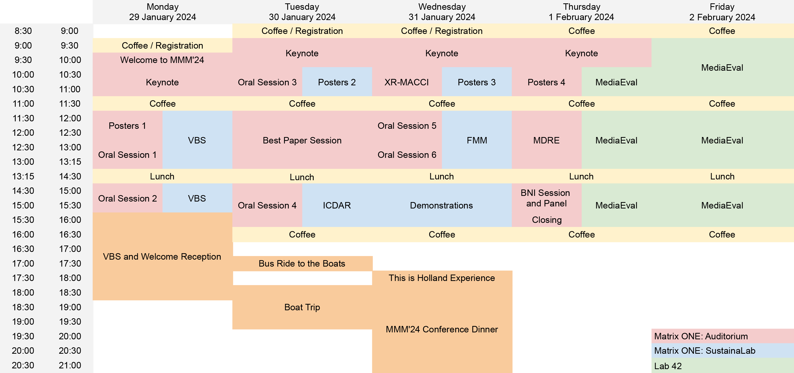
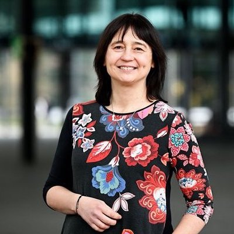
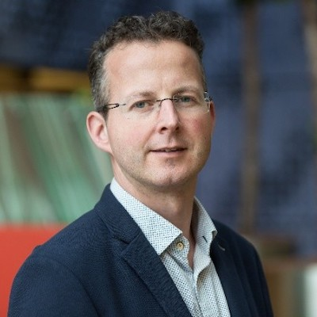
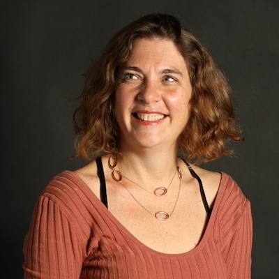
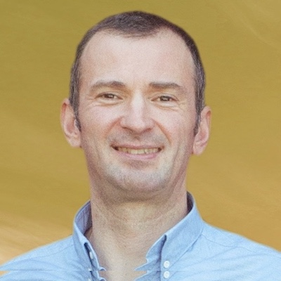
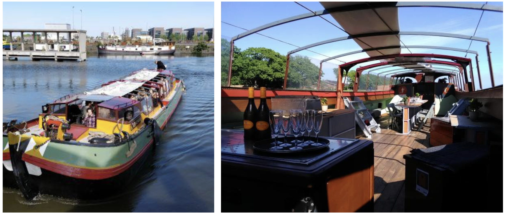
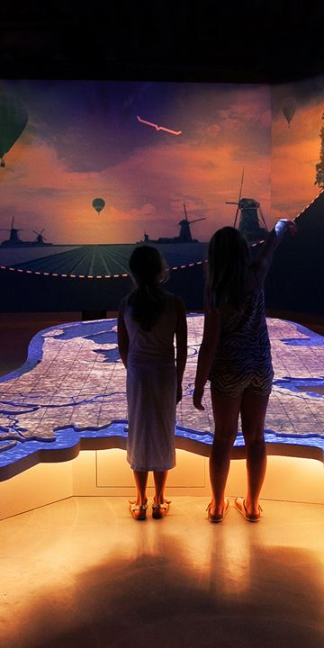
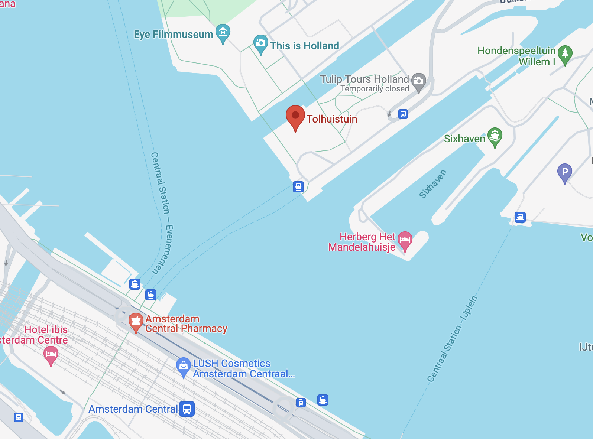

You can download the full program PDF by clicking on the above button.
Program Outline
Below is the program outline.

You can download the full program PDF by clicking on the above button.
Below is the program outline.
The conference proceedings for MMMM2024 are available online at Springer:
Visual Analytics wants to foster the strengths of humans and computers effectively through the combination of automatic data analysis methods, visualization, and interaction. Visual analytics is an extension of machine learning methods. It is also a complement to the already existing visualization techniques by the introduction of the concepts of reasoning and machine learning. Machine learning has successfully developed models that outperform humans in several tasks. However, this success is limited when it comes to increasing knowledge, and providing new understanding based on new data. Humans uniquely understand the world through intuition, common sense, creativity, and emotion, capabilities that are required for many multi-faceted tasks. In this talk, I will present our work and my view on embedding the human in the loop in the machine learning context through the concepts of visual analytics. In particular, we focus on data exploration, and hypothesis generation relying on dimensionality reduction methods as an effective visual analytics component for large high-dimensional data. Furthermore, I will discuss the promise, challenges, and current research in visual analytics to open the black box of machine learning models.
Prof. Dr. Anna Vilanova is full professor in visual analytics (vis.win.tue.nl) since October 2019, at the department of Mathematics and Computer Science, at the Eindhoven University of Technology (TU/e). Previously she was associate professor for 6 years at the Computer Graphics & Visualization Group at EEMCS at the University of Delft, the Netherlands. From 2002 to August 2013, she was Assistant Professor at the Biomedical Image Analysis group of the Biomedical Engineering Department at TU/e. She is leading a research group in the subject of visual analytics and multivalued image analysis and visualization, focusing on visual analytics for high dimensional complex data and explainable AI. She focuses on Biomedical applications such as: Diffusion Weighted Imaging, 4D Flow and Pan-genomics. She was member of the steering committee of EuroVis (2014 -2018) and VCBM (2018-2022). She is elected member of the EUROGRAPHICS executive committee since 2015, vice president (2019-2022), and currently president of EUROGRAPHICS. She also became EUROGRAPHICS fellow in 2019. She is elected member of IEEE VIS Steering Committee (VSC) since 2021.
 Multimodal foundation models are a revolutionary class of AI models that provide impressive abilities to generate multimedia content and do so by interactive prompts in a seemingly creative manner. These foundation models are often self-supervised transformer-based models pre-trained on large volumes of data, typically collected from the web. They already form the basis of all state-of-the-art systems in computer vision and natural language processing across a wide range of tasks and have shown impressive transfer learning abilities. Despite their immense potential, these foundation models face challenges in fundamental perception tasks such as spatial grounding and temporal reasoning, have difficulty to operate on low-resource scenarios, and neglect human-alignment for ethical, legal, and societal acceptance. In this talk I will highlight recent work from my lab that identifies several of these challenges as well as ways to update foundation models to address these challenges and to do so in a sustainable way, without the need to retrain from scratch.
Prof. Dr. Cees G.M. Snoek is a full professor in computer science at the University of Amsterdam, where he heads the Video & Image Sense Lab. He is also a director of three public-private AI research labs: QUVA Lab with Qualcomm, Atlas Lab with TomTom and AIM Lab with the Inception Institute of Artificial Intelligence. At University spin-off Kepler Vision Technologies he acts as Chief Scientific Officer. Professor Snoek is also the director of the ELLIS Amsterdam Unit and scientific director of Amsterdam AI, a collaboration between government, academic, medical and other organisations in Amsterdam to help the city develop and deploy responsible AI. His research interests focus on making sense of video and images. He has published over 200 refereed book chapters, journal and conference papers, and frequently serves as an area chair of the major conferences in computer vision and multimedia. He is currently an associate editor for Computer Vision and Image Understanding and the IEEE Transactions on Pattern Analysis and Machine Intelligence.
 The brain is a unique system, in that its dynamics have a clear function: making its owner respond to the world around it. In order to perform this function, the brain continuously processes information. How do the dynamics of neurons and networks result in information processing? The physical structure of the brain (its "hardware") shapes this information processing and vice versa: the computations needed for information processing (the "software") are adapted to the physical structure of the hardware. Here, I will discuss this relationship between information processing and neural properties on different levels, from single neurons to networks, and from different perspectives, from single cell electrophysiology to network modelling.
Fleur Zeldenrust started studying physics, but switched to neuroscience during her master's degree. She obtained a PhD in computational neuroscience in 2012, from the University of Amsterdam, supervised by Wytse Wadman. After performing postdoctoral research at the École Normale Supérieure in Paris with Boris Gutkin and Sophie Denève, she returned to the Netherlands to design a bachelour track in computational neuroscience in the Psychobiology BSc degree at the University of Amsterdam. An NWO Veni grant (2015) and later a Marie Curie Training Network grant (2019, 'SmartNets') allowed her to start her own research group at the Donders Institute for Brain, Cognition and Behaviour of the Radboud University in Nijmegen. She recently obtained an NWO Vidi grant to research the influence of neuromodulators on information processing in the brain. Next to her research, she is very passionate about communicating neuroscience to the public, (co-)founding amongst others the Dutch Brain Olympiad and the BrainHelpDesk.
 Dr. Ioannis (Yiannis) Kompatsiaris is the Director of CERTH-ITI and the Head of Multimedia Knowledge and Social Media Analytics Laboratory. His research interests include AI/ML for Multimedia, Semantics (multimedia ontologies and reasoning), Social Media and Big Data Analytics, Multimodal and Sensors Data Analysis, Human Computer Interfaces, e- Health, Cultural, Media/Journalism and Security applications. He is the co-author of 222 papers in refereed journals, 69 book chapters, 10 patents and 641 papers in international conferences. Dr. Kompatsiaris has participated (as PI and Project Coordinator) in numerous National and European research programs and direct collaborations with the industry. Currently, he is co-ordinating the “AI4Media: Artificial Intelligence for the Society and the Media Industry” NoE. He has been the co-organizer of various international conferences and workshops including the ACM International Conference on Multimedia Retrieval (ACM ICMR) in 2023 and has served as a regular reviewer, associate and guest editor for a number of journals and conferences, currently being an associate editor of IEEE Transactions on Image Processing. He is a member of the National Ethics and Technoethics Committee, the Scientific Advisory Board of the CHIST-ERA funding programme and has been an elected member of the IEEE Image, Video and Multidimensional Signal Processing - Technical Committee (IVMSP - TC). He is a Senior Member of IEEE and ACM. He is the co-founder of two spin-off companies: Infalia focusing on data intensive web services and applications and CDXi, creating AI and Multimodal Data Fusion solutions for Green and Digital Transformation.
For MMM2024 we have an exciting social events programme spread out over three days:
On Monday there will be the Welcome Reception and in conjunction there will be the Video Browser Showdown!

On Tuesday there will be a boat trip of Amsterdam's canals including busses to take you from the conference location to the departure point.
 On Wednesday we will visit the This is Holland! where you can experience a spectacular 5D flight over many must-sees of the Netherlands! Fly like a bird and admire from the air the famous Amsterdam canals, the Wadden Sea, the Veluwe and more. Amazing special effects - such as wind, mist and smell - stimulate all the senses and make it seem as if you are really flying through the clouds, crossing dikes and braving storms. Be surprised by the beauty of the Netherlands and the feeling of flying. Following the This is Holland! experience we will conclude the evening at Restaurant Tolhuistuin which is located across the Central Station of Amsterdam and can be reached using the free ferry service to Buiksloterweg. 
Social Events